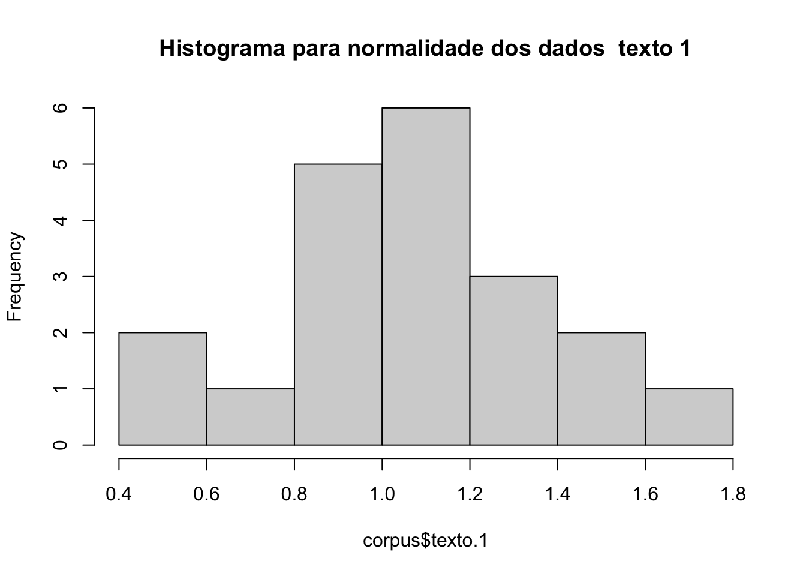
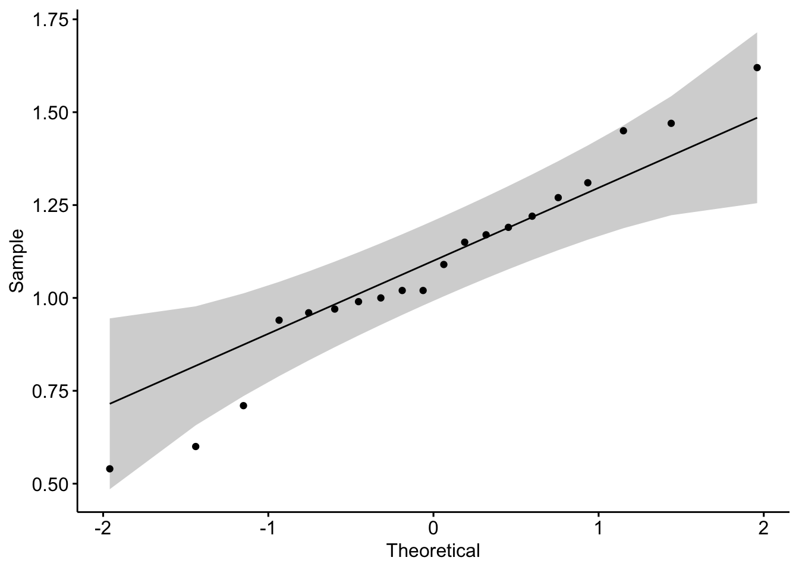
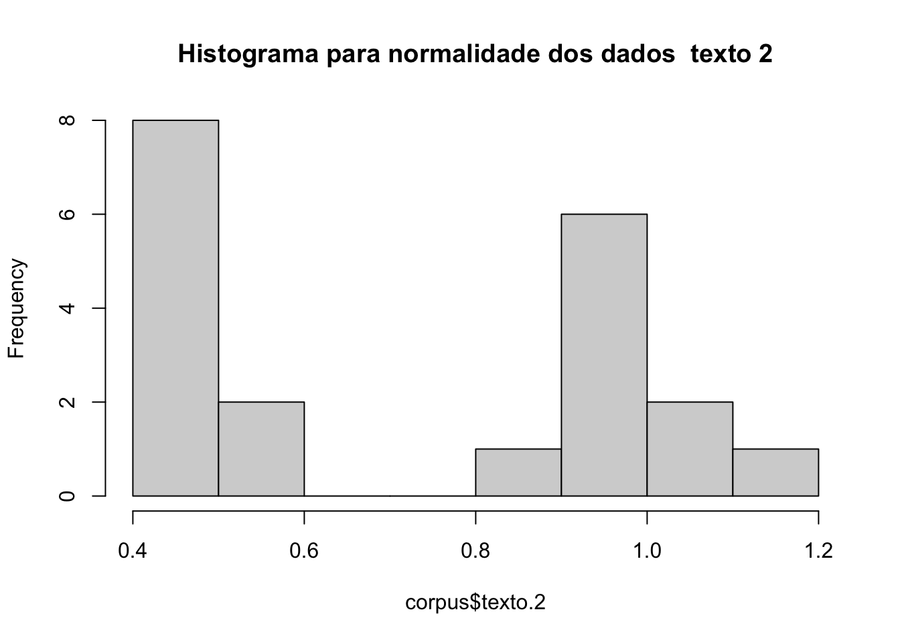
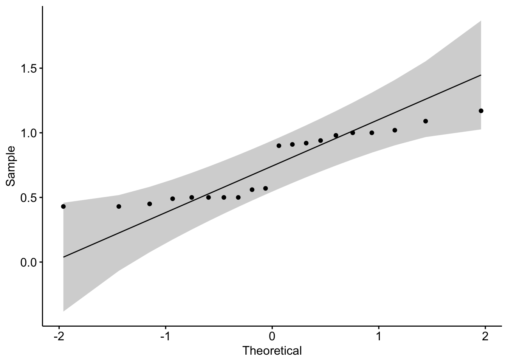
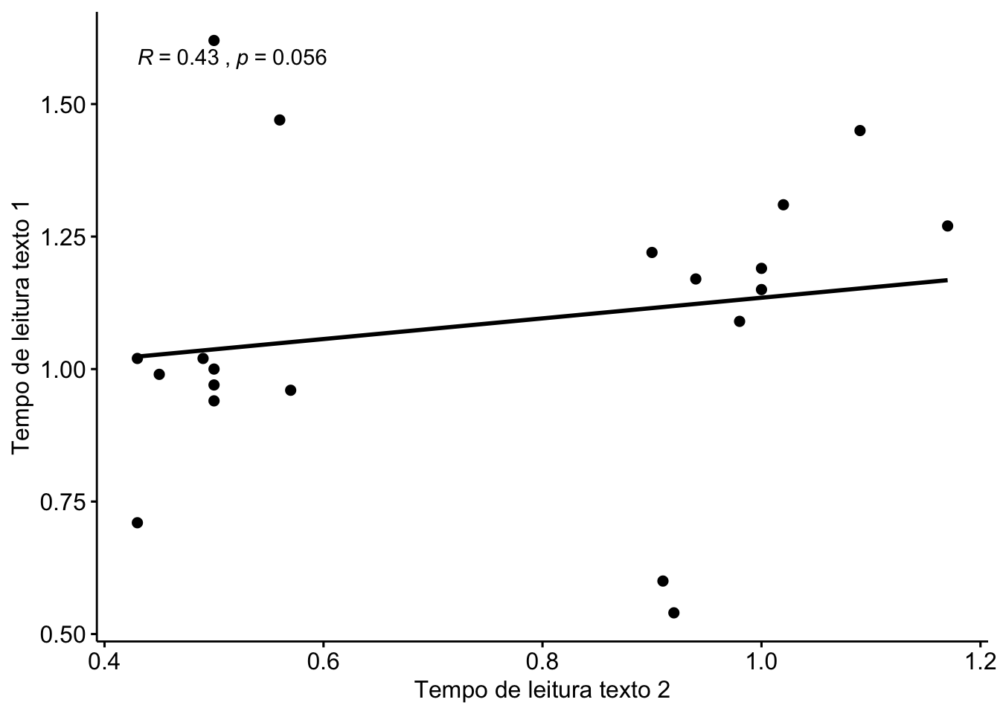
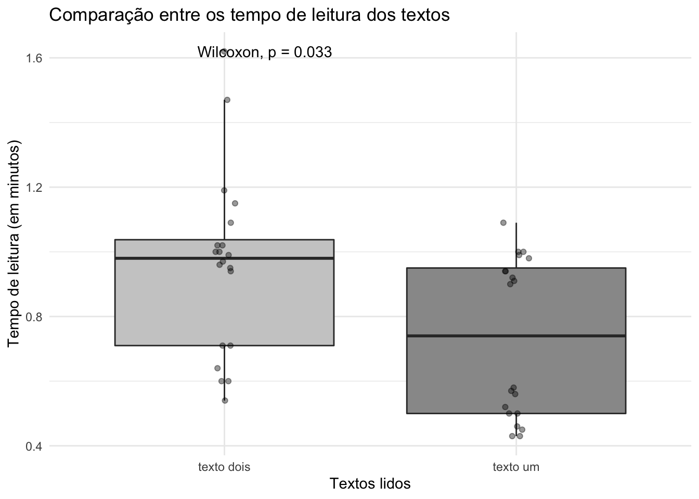
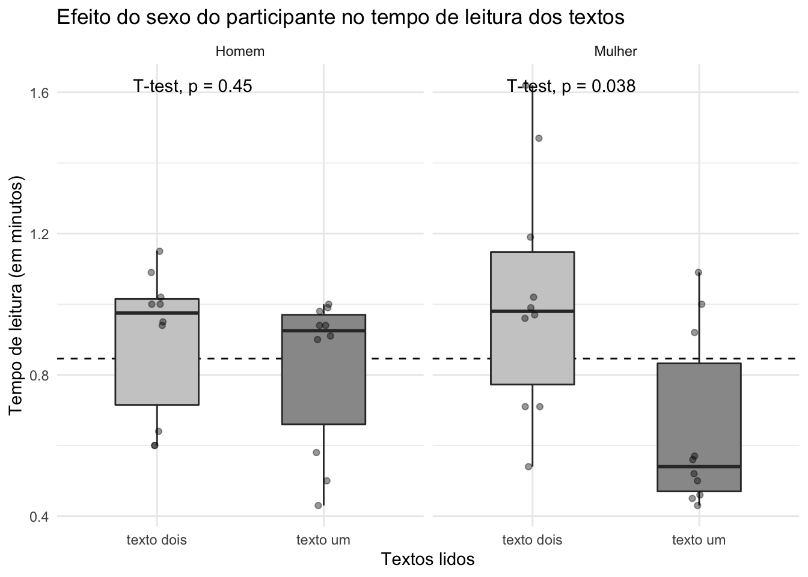
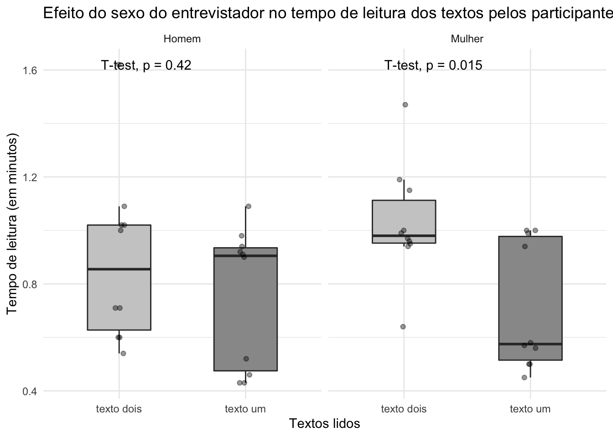

Crie um novo projeto no RStudio e coloque na pasta os arquivos
corpus.csvedados.csv. Crie umscriptdo Rstudio para registrar a sua análise. Com esse procedimento, não será necessário ficar mudando de diretório. E você pode voltar os passos caso tenha dificuldade com um comando. Este símbolo#significa que oscriptnão irá ler o que está na sequência; utilize para inserir comentários sobre sua análise.
Vamos trabalhar com variáveis quantitativas. Para isso, vamos usar o conjunto de dados do capítulo Palavras-tabu e efeitos de gênero na leitura (Pinheiro, Menezes & Freitag, 2020), que apresenta o resultado de um estudo sobre os efeitos de palavras-tabu e de gênero na situação de leitura como pistas de processamento de estereótipo e preconceito.
A organização de um conjunto de dados depende da pergunta que será feita a eles. Por isso, é importante ter clareza das perguntas a serem feitas antes de iniciar a coleta, para não trabalhar à toa. Existem duas formas de organizar os dados, e elas podem ser manipuladas com os recursos do pacote dplyr. Os dados podem ser pareados ou alinhados.
Este arquivo apresenta as variáveis pareadas. Vamos importar da tabela em formato *.csv para o formato de dataframe do R:
dados <- read.table("dados.csv", sep = ";", header = T) Observe a estrutura do conjunto de dados importado:
str(dados)
#> 'data.frame': 40 obs. of 6 variables:
#> $ participante : chr "lili" "lili" "luana" "luana" ...
#> $ entrevistador : chr "homem" "homem" "homem" "homem" ...
#> $ tempo.de.leitura: num 0.92 0.54 0.52 1.62 0.43 0.71 1.09 0.71 0.46 1.02 ...
#> $ tipo.de.texto : chr "texto um" "texto dois" "texto um" "texto dois" ...
#> $ sexo : chr "feminino" "feminino" "feminino" "feminino" ...
#> $ metacomentario : chr "nao" "nao" "nao" "sim" ...Observe que são dois tipos de variáveis: factor e num. Estas são as seis primeiras ocorrências do conjunto de dados:
head(dados)
#> participante entrevistador tempo.de.leitura tipo.de.texto sexo
#> 1 lili homem 0.92 texto um feminino
#> 2 lili homem 0.54 texto dois feminino
#> 3 luana homem 0.52 texto um feminino
#> 4 luana homem 1.62 texto dois feminino
#> 5 mariane homem 0.43 texto um feminino
#> 6 mariane homem 0.71 texto dois feminino
#> metacomentario
#> 1 nao
#> 2 nao
#> 3 nao
#> 4 sim
#> 5 nao
#> 6 naoE estas são as cinco últimas ocorrências:
tail(dados)
#> participante entrevistador tempo.de.leitura tipo.de.texto sexo
#> 35 joao mulher 0.94 texto um masculino
#> 36 joao mulher 0.64 texto dois masculino
#> 37 jose mulher 0.99 texto um masculino
#> 38 jose mulher 0.95 texto dois masculino
#> 39 eduardo mulher 1.00 texto um masculino
#> 40 eduardo mulher 1.15 texto dois masculino
#> metacomentario
#> 35 nao
#> 36 nao
#> 37 nao
#> 38 nao
#> 39 nao
#> 40 naofactor é uma variável qualitativa e num é uma variável quantitativa. Este comando apresenta um resumo das variáveis:
summary(dados)
#> participante entrevistador tempo.de.leitura tipo.de.texto
#> Length:40 Length:40 Min. :0.4300 Length:40
#> Class :character Class :character 1st Qu.:0.5775 Class :character
#> Mode :character Mode :character Median :0.9400 Mode :character
#> Mean :0.8460
#> 3rd Qu.:1.0000
#> Max. :1.6200
#> sexo metacomentario
#> Length:40 Length:40
#> Class :character Class :character
#> Mode :character Mode :character
#>
#>
#> Agora, vamos ver outro arranjo para os mesmos dados. Vamos importar este arquivo, que apresenta as variáveis alinhadas.
corpus <- read.table("corpus.csv", sep = ";", header = T)Faça o mesmo que fez com o arquivo anterior.
summary(corpus)
#> participante texto.1 metacomentario texto.2
#> Length:20 Min. :0.5400 Length:20 Min. :0.430
#> Class :character 1st Qu.:0.9675 Class :character 1st Qu.:0.500
#> Mode :character Median :1.0550 Mode :character Median :0.735
#> Mean :1.0845 Mean :0.743
#> 3rd Qu.:1.2325 3rd Qu.:0.985
#> Max. :1.6200 Max. :1.170
#> entrevistador sexo
#> Length:20 Length:20
#> Class :character Class :character
#> Mode :character Mode :character
#>
#>
#> Compare o resumo de variáveis dos dois conjuntos de dados: qual a diferença entre eles? Observe que a forma como organizamos nosso conjunto de dados pode interferir nos tipos de resposta que precisamos. Dito de outra forma: o modo como organizamos o conjunto de dados deve favorecer o tipo de respostas que precisamos dos dados. Por isso, vale a pena repetir: antes de sair coletando dados, é preciso ter clareza das perguntas que serão feitas aos dados!
Primeiro, é preciso carregar os pacotes para manipulação dos dados. Instale antes. Cada um executará uma função específica e tutoriais para seu uso podem ser encontrados facilmente. Recomendo que estudem os pacotes e vejam as possibilidade de maniputação.
library(dplyr)
#>
#> Attaching package: 'dplyr'
#> The following objects are masked from 'package:stats':
#>
#> filter, lag
#> The following objects are masked from 'package:base':
#>
#> intersect, setdiff, setequal, union
library(report)
library(ggplot2)
library(ggsignif)
library(forcats)
library(ggpubr)
#> Loading required package: magrittr
library(rstatix)
#>
#> Attaching package: 'rstatix'
#> The following object is masked from 'package:stats':
#>
#> filterUma pergunta que precisamos fazer aos dados é se existe diferença no tempo de leitura entre os textos e se essa diferença é significativa.
A primeira pergunta pode ser respondida com a função summary(). Para dizer se essa diferença é signficativa, precisamos realizar um teste estatístico de significância para a diferença. Antes de decidir pelo teste, precisamos conhecer os dados.
A distribuição é normal?
Por inspeção visual, podemos ver se há normalidade. Para isso, fazemos um histograma da distribuição dos tempos de leitura, para cada um dos textos (data.frame corpus)
hist(corpus$texto.1, main = "Histograma para normalidade dos dados \ texto 1")
Visualmente, conseguimos ver uma curva normal nos dados. Vamos fazer um teste Shapiro. A hipótese nula do teste de Shapiro-Wilk é que a população tem distribuição normal. Portanto, um valor de p < 0.05 indica que a hipótese nula é rejeitada, ou seja, os dados não apresentam distribuição normal.
shapiro.test(corpus$texto.1)
#>
#> Shapiro-Wilk normality test
#>
#> data: corpus$texto.1
#> W = 0.96974, p-value = 0.7493Os dados têm distribuição normal. A dispersão pode ser visualizada:
ggqqplot(corpus$texto.1)
Agora faça o mesmo para o texto 2; a distribuição é normal? 
#>
#> Shapiro-Wilk normality test
#>
#> data: corpus$texto.2
#> W = 0.8365, p-value = 0.003193A amostra é muito pequena (20 participantes); certamente, a ampliação da amostra resolveria o problema…
A variância é homogênea?
Vamos testar a homogeneidade da variância entre os grupos. Aplicaremos o teste Bartlett, que : hipótese nula é que não há diferença na variância entre grupos. Para isso, será preciso testar o efeito de cada grupo (variável independente nominal, no caso, sexo do participante e sexo do entrevistador) em cada texto:
bartlett.test(texto.1 ~ entrevistador, data = corpus)
#>
#> Bartlett test of homogeneity of variances
#>
#> data: texto.1 by entrevistador
#> Bartlett's K-squared = 4.3025, df = 1, p-value = 0.03806
bartlett.test(texto.2 ~ entrevistador, data = corpus)
#>
#> Bartlett test of homogeneity of variances
#>
#> data: texto.2 by entrevistador
#> Bartlett's K-squared = 0.0026807, df = 1, p-value = 0.9587
bartlett.test(texto.1 ~ sexo, data = corpus)
#>
#> Bartlett test of homogeneity of variances
#>
#> data: texto.1 by sexo
#> Bartlett's K-squared = 2.1265, df = 1, p-value = 0.1448
bartlett.test(texto.2 ~ sexo, data = corpus)
#>
#> Bartlett test of homogeneity of variances
#>
#> data: texto.2 by sexo
#> Bartlett's K-squared = 0.010829, df = 1, p-value = 0.9171Observe os resultados e diga qual é o grupo que está inteferindo na variância?
Há correlação entre as variáveis? Há correlação entre as variáveis?
A próxima inspeção é saber se correlação entre os dados, ou seja, se há interferência de uma variável na outra. Nos termos do objetivo do estudo em questão, precisamos saber se o tempo de leitura do texto 1 interfere no texto de leitura do texto 2.
Para isso, vamos calcular o coeficiente de correlação, que mede se e o quanto duas variáveis quantitativas tendem a mudar juntas. Existem três testes, cada um com sua especificidade de variáveis: O coeficiente de correlação de Pearson (r) mede o grau da correlação linear entre duas variáveis quantitativas numéricas. Quando as variáveis são ordinais, podem ser considerados os coeficientes de correlação de Spearman ρ (rhô) ou de Kendall τ (tau); a estatística do teste Kendall é mais robusta, porém, é sensível a amostras restritas. O coeficiente de correlação pode variar de -1 a +1, quanto maior for o valor absoluto do coeficiente, mais forte é a relação entre as variáveis. Um valor absoluto de 1 indica uma relação perfeita, e um valor zero indica ausência de relação. Para realizar o teste, utilizamos a função cor.test e especificamos o método:
cor.test(corpus$texto.1, corpus$texto.2,
method = "spearman")
#> Warning in cor.test.default(corpus$texto.1, corpus$texto.2, method =
#> "spearman"): Cannot compute exact p-value with ties
#>
#> Spearman's rank correlation rho
#>
#> data: corpus$texto.1 and corpus$texto.2
#> S = 753.68, p-value = 0.05631
#> alternative hypothesis: true rho is not equal to 0
#> sample estimates:
#> rho
#> 0.4333245O resultado do teste nos permite dizer que, embora o tempo de leitura seja diferente entre os textos, não há correlação entre eles.
Vamos fazer a inspeção visual do resultado; se a hipótese de pesquisa considerasse a correlação, esta figura poderia ser incluída na análise.
ggscatter(corpus, y = "texto.1", x = "texto.2",
add = "reg.line", conf.int = FALSE,
cor.coef = TRUE, cor.method = "spearman",
ylab = "Tempo de leitura texto 1", xlab = "Tempo de leitura texto 2")
#> `geom_smooth()` using formula 'y ~ x'
Já testamos a normalidade da distribuição e a correlação entre as variáveis. A partir disso, podemos escolher que teste estatístico aplicaremos para explicar a diferença na comparação entre as médias de tempo de leitura em cada um dos textos.
Para comparar médias, podemos utilizar um conjunto de testes, a depender da quantidade de grupos e do tipo de distribuição dos dados. Neste tutorial, vamos conhecer os usos dos testes: T, Wilcoxon, ANOVA e Kruskal-Wallis.
Para selecionar o teste, precisamos saber o que queremos fazer:
Vamos trabalhar neste tutorial os três primeiros casos.
Sejam corpus e dados resultados de dois estudos distintos. A média do tempo de leitura de dados pode ser calculada da seguinte forma:
mean(dados$tempo.de.leitura)
#> [1] 0.846Queremos saber qual a relação entre o tempo de leitura de dados e o tempo leitura de texto.1 em corpus.
Primeiro, precisamos testar a normalidade dos dados. Teste a normalidade da distribuição de texto.1 em corpus:
shapiro.test(corpus$texto.1)
#>
#> Shapiro-Wilk normality test
#>
#> data: corpus$texto.1
#> W = 0.96974, p-value = 0.7493Como a distribuição é normal, podemos realizar um teste-t para uma amostra. Este é um teste paramétrico, que pressupõe a condição de normalidade dos dados. Temos a média, calculada por mean(dados$tempo.de.leitura). Podemos querer saber se a média do tempo de leitura em corpus$texto.1 é igual, menor ou maior do que um valor conhecido assumido como padrão de referência (no caso, dados$tempo.de.leitura).
Vamos fazer o teste assumindo a hipótese de que a média de corpus$texto.1 será igual à média teórica/já conhecida (mu), assumindo um nível de alfa = 0.05:
t.test(corpus$texto.1, mu = 0.846, alternative = "two.side")
#>
#> One Sample t-test
#>
#> data: corpus$texto.1
#> t = 3.8734, df = 19, p-value = 0.001023
#> alternative hypothesis: true mean is not equal to 0.846
#> 95 percent confidence interval:
#> 0.9556251 1.2133749
#> sample estimates:
#> mean of x
#> 1.0845Agora vamos fazer o mesmo procedimento de comparação da média de dados$tempo.de.leitura com texto.2. Precisamos saber se a amostra satisfaz as condições de normalidade.
shapiro.test(corpus$texto.2)
#>
#> Shapiro-Wilk normality test
#>
#> data: corpus$texto.2
#> W = 0.8365, p-value = 0.003193Como a distribuição não atende às condições de normalidade, precisamos utilizar um teste equivalente não-paramétrico, o teste Wilcoxon para uma amostra. Este teste permite determinar se a mediana de uma amostra é igual, maior ou menor do que um valor conhecido assumido como padrão de referência.
Média e mediana são medidas de tendência central e só se aplicam a variáveis quantitativas.
Vamos calcular a mediana de texto.2:
median(corpus$texto.2)
#> [1] 0.735Agora que sabemos a mediana, o procedimento é o mesmo do teste-t, só que com a função wilcox.test(). Vamos testar a hipótese de que são iguais:
wilcox.test(corpus$texto.2, mu = 0.735, alternative = "two.side")
#> Warning in wilcox.test.default(corpus$texto.2, mu = 0.735, alternative =
#> "two.side"): cannot compute exact p-value with ties
#>
#> Wilcoxon signed rank test with continuity correction
#>
#> data: corpus$texto.2
#> V = 110, p-value = 0.8664
#> alternative hypothesis: true location is not equal to 0.735Em resumo, quando temos uma amostra e queremos comparar com um valor já conhecido, primeiro testamos a normalidade dos dados. Se os dados apresentam distribuição normal, escolhemos o teste-T para uma amostra, um teste paramétrico; se as condições de normalidade não são atendidas, escolhemos o teste Wilcoxon para uma amostra, um teste não paramétrico.
Queremos saber se o tempo de leitura de participantes homens é diferente do tempo de leitura de participantes mulheres no texto.1. Temos dois grupos independentes entre si, e esta identificação é importante para os procedimentos de seleção dos testes estatísticos.
Já sabemos que os dados de texto.1 têm distribuição normal; vamos ver se a normalidade se conserva dentro dos grupos:
# teste Shapiro para normalidade com dados de participantes homens
with(corpus, shapiro.test(texto.1[sexo == "masculino"]))
#>
#> Shapiro-Wilk normality test
#>
#> data: texto.1[sexo == "masculino"]
#> W = 0.89336, p-value = 0.1849
# teste Shapiro para normalidade com dados de participantes mulheres
with(corpus, shapiro.test(texto.1[sexo == "feminino"]))
#>
#> Shapiro-Wilk normality test
#>
#> data: texto.1[sexo == "feminino"]
#> W = 0.95066, p-value = 0.6763Como os grupos da amostra atendem às condições de normalidade e homogeneidade, podemos empregar um teste paramétrico, o teste-t para amostras independentes para saber se a média entre os grupos é igual, maior ou menor. Vamos testar se as médias são iguais (`alternative = “two.side”’).
t.test(texto.1 ~ sexo, data = corpus, var.equal = TRUE, alternative = "two.side")
#>
#> Two Sample t-test
#>
#> data: texto.1 by sexo
#> t = 0.1186, df = 18, p-value = 0.9069
#> alternative hypothesis: true difference in means is not equal to 0
#> 95 percent confidence interval:
#> -0.2507083 0.2807083
#> sample estimates:
#> mean in group feminino mean in group masculino
#> 1.092 1.077A última linha do teste informa a média de cada grupo. Vamos fazer a mesma pergunta sobre o efeito dos participantes ao texto.2: existe diferença no tempo de leitura de participantes homnes e participantes mulheres? Em não sendo satisfeita a condição de normalidade entre os grupos, utilizamos um teste não paramétrico, o teste de Wilcoxon para amostras independentes. A sintaxe do teste é a mesma do teste-t. Vamos testar a hipótese de que a mediana do tempo de leitura de participantes mulheres será maior do que a de participantes homens:
wilcox.test(texto.2 ~ sexo, data = corpus,
exact = FALSE, alternative = "greater")
#>
#> Wilcoxon rank sum test with continuity correction
#>
#> data: texto.2 by sexo
#> W = 34, p-value = 0.8949
#> alternative hypothesis: true location shift is greater than 0Agora chegamos ao objetivo do estudo em questão: um mesmo participante, leu dois textos diferentes. Temos a mesma medida para cada participante, é o que chamamos de amostras dependentes ou pareadas. Os testes a serem realizados são os mesmos apresentados anteriormente, teste-t para amostras pareadas, se a condição de normalidade é atendida, ou teste Wilcoxon para amostras pareadas se a condição de normalidade não é atendida.
Já sabemos que em dados$tempo.de.leitura a distribuição não é normal.
shapiro.test(dados$tempo.de.leitura)
#>
#> Shapiro-Wilk normality test
#>
#> data: dados$tempo.de.leitura
#> W = 0.91501, p-value = 0.005386Porém, todos os trabalhos com leitura sempre sinalizam para a normalidade das distribuições. Uma explicação para essa amostra seria o tamanho; se ampliássemos o número de participantes, a normalidade tenderia a se regularizar. Outra possibilidade é erro no cômputo de algum dado, um zero a mais ou a menos, uma mudança de ordem de algarismo na hora da digitação. Por isso é importante realizar a inspeção dos dados; sempre que algo sair do que é esperado a partir das evidências de outros estudos, deve-se checar a possível interferência.
Um primeiro procedimento a ser feito é o de inspeção de outliers, distribuições fora dos parâmetros.
dados %>%
group_by(tipo.de.texto, sexo, entrevistador) %>%
identify_outliers(tempo.de.leitura)
#> # A tibble: 5 x 8
#> entrevistador tipo.de.texto sexo participante tempo.de.leitura metacomentario
#> <chr> <chr> <chr> <chr> <dbl> <chr>
#> 1 homem texto dois femi… luana 1.62 sim
#> 2 mulher texto dois masc… joao 0.64 nao
#> 3 mulher texto dois masc… eduardo 1.15 nao
#> 4 mulher texto um femi… vanessa 1 nao
#> 5 homem texto um masc… hugo 0.43 nao
#> # … with 2 more variables: is.outlier <lgl>, is.extreme <lgl>As duas últimas colunas do resultado informam se há valores outlier (is.outlier) e se estes são extremos (is.extreme). Como podemos ver, há três valores extremos (TRUE). Podemoes excluir estes dados para tentar normalizar a análise (mas perderemos 3 participantes).
dados %>%
filter((tipo.de.texto != "Texto-controle" & participante != "vanessa") & (tipo.de.texto != "Texto-controle" & participante != "hugo") | (tipo.de.texto != "Texto-alvo" & participante != "joao")) %>%
identify_outliers(tempo.de.leitura)
#> [1] participante entrevistador tempo.de.leitura tipo.de.texto
#> [5] sexo metacomentario is.outlier is.extreme
#> <0 rows> (or 0-length row.names)dados %>%
filter((tipo.de.texto != "Texto-controle" & participante != "vanessa") & (tipo.de.texto != "Texto-controle" & participante != "hugo") | (tipo.de.texto != "Texto-alvo" & participante != "joao")) %>%
shapiro_test(tempo.de.leitura)
#> # A tibble: 1 x 3
#> variable statistic p
#> <chr> <dbl> <dbl>
#> 1 tempo.de.leitura 0.915 0.00539Para fins didáticos, vamos realizar as análises considerando o teste-t e o teste Wilcoxon. Na prática, as diferenças são poucas. Apenas o procedimento de cálculo muda em função das pressuposições, assim como o modo de reportar os resultados.
Vamos retomar as estatísticas sumárias, com a função get_summary_stats() do pacote rstatixc:
dados %>%
group_by(tipo.de.texto, sexo, entrevistador) %>%
get_summary_stats(tempo.de.leitura)
#> # A tibble: 8 x 16
#> entrevistador tipo.de.texto sexo variable n min max median q1
#> <chr> <chr> <chr> <chr> <dbl> <dbl> <dbl> <dbl> <dbl>
#> 1 homem texto dois femi… tempo.d… 5 0.54 1.62 0.71 0.71
#> 2 mulher texto dois femi… tempo.d… 5 0.96 1.47 0.99 0.97
#> 3 homem texto dois masc… tempo.d… 5 0.6 1.09 1 0.6
#> 4 mulher texto dois masc… tempo.d… 5 0.64 1.15 0.95 0.94
#> 5 homem texto um femi… tempo.d… 5 0.43 1.09 0.52 0.46
#> 6 mulher texto um femi… tempo.d… 5 0.45 1 0.56 0.5
#> 7 homem texto um masc… tempo.d… 5 0.43 0.98 0.91 0.9
#> 8 mulher texto um masc… tempo.d… 5 0.5 1 0.94 0.580
#> # … with 7 more variables: q3 <dbl>, iqr <dbl>, mad <dbl>, mean <dbl>,
#> # sd <dbl>, se <dbl>, ci <dbl>Além da média (mean) e da mediana (median), que já conhecemos, as estatísticas sumárias incluem outras informações, como:
min) e valor máximo (max): o menor e o maior valor da série.sd), uma medida de dispersão: medida do grau de dispersão em relação à média.se): uma medida de estimativa do desvio padrão.ci): estimativa do intervalo considerando o desvio e o erro padrão.Agora vamos visualizar graficamente essa diferença.
Queremos saber se a diferença de leitura entre os textos é estatisticamente significativa. O texto sem palavras-tabu é o Texto-controle, e o texto com palavras-tabu é o Texto-alvo. Vamos representar graficamente a diferença entre as médias do tempo de leitura, já com o resultado do teste estatístico. Para gerar o gráfico, usamos o pacote ggplot2 e para inserir o teste no gráfico, o pacote ggsignif.
Vamos visualizar o resultado primeiramente com o teste-t:
ggplot(dados, aes(x=tipo.de.texto, y=tempo.de.leitura, fill = tipo.de.texto)) +
geom_boxplot(outlier.shape = NA) +
scale_fill_grey(start = 0.8, end = 0.6) +
geom_jitter(width = .05,
height = 0,
alpha = 0.4) +
theme_minimal() +
theme(legend.position = "none") +
ggtitle("Comparação entre os tempo de leitura dos textos") +
xlab("Textos lidos") + ylab("Tempo de leitura (em minutos)") +
stat_compare_means(method = "t.test", paired = TRUE) ### Informamos que queremos um teste-t, pareado
#> Warning: `select_()` is deprecated as of dplyr 0.7.0.
#> Please use `select()` instead.
#> This warning is displayed once every 8 hours.
#> Call `lifecycle::last_warnings()` to see where this warning was generated.
#> Warning: `tbl_df()` is deprecated as of dplyr 1.0.0.
#> Please use `tibble::as_tibble()` instead.
#> This warning is displayed once every 8 hours.
#> Call `lifecycle::last_warnings()` to see where this warning was generated.Somente o cálculo do teste:
t.test(dados$tempo.de.leitura ~ dados$tipo.de.texto, paired = TRUE)
#>
#> Paired t-test
#>
#> data: dados$tempo.de.leitura by dados$tipo.de.texto
#> t = 2.3611, df = 19, p-value = 0.02906
#> alternative hypothesis: true difference in means is not equal to 0
#> 95 percent confidence interval:
#> 0.02554909 0.42445091
#> sample estimates:
#> mean of the differences
#> 0.225Vamos gerar o mesmo gráfico, mas agora com o teste Wilcoxon:
ggplot(dados, aes(x=tipo.de.texto, y=tempo.de.leitura, fill = tipo.de.texto)) +
geom_boxplot(outlier.shape = NA) +
scale_fill_grey(start = 0.8, end = 0.6) +
geom_jitter(width = .05,
height = 0,
alpha = 0.4) +
theme_minimal() +
theme(legend.position = "none") +
ggtitle("Comparação entre os tempo de leitura dos textos") +
xlab("Textos lidos") + ylab("Tempo de leitura (em minutos)") +
stat_compare_means(method = "wilcox.test", paired = TRUE)
wilcox.test(dados$tempo.de.leitura ~ dados$tipo.de.texto, paired = TRUE)
#>
#> Wilcoxon signed rank exact test
#>
#> data: dados$tempo.de.leitura by dados$tipo.de.texto
#> V = 162, p-value = 0.03277
#> alternative hypothesis: true location shift is not equal to 0Como podemos perceber, ambos os testes permitem rejeitar a hipótese nula de que não há diferença, e nos permite lançar a hipótese alternativa de que existe uma diferença entre o tempo de leitura do texto-controle e o texto-alvo.
Agora vamos verificar se existe efeito do sexo do participante no tempo da leitura. Primeiro, precisamos organizar os fatores, para aparecerem no gráfico.
dados$sexo <- dados$sexo %>%
fct_recode("Mulher" = "feminino", "Homem" = "masculino")
dados$sexo <- factor(dados$sexo, levels = c("Homem", "Mulher")) E vamos gerar o gráfico:
ggplot(dados, aes(x=tipo.de.texto, y=tempo.de.leitura, fill = tipo.de.texto)) +
geom_boxplot(outlier.shape = NA, width = .5) +
scale_fill_grey(start = 0.8, end = 0.6) +
geom_jitter(width = .05,
height = 0,
alpha = 0.4) +
facet_wrap(~sexo) +
theme_minimal() +
theme(legend.position = "none") +
ggtitle("Efeito do sexo do participante no tempo de leitura dos textos") +
xlab("Textos lidos") + ylab("Tempo de leitura (em minutos)") +
stat_compare_means(method = "t.test", paired = TRUE)Vamos incorporar ao gráfico uma linha com a média do tempo de leitura:
ggplot(dados, aes(x=tipo.de.texto, y=tempo.de.leitura, fill = tipo.de.texto)) +
geom_hline(yintercept = mean(dados$tempo.de.leitura), linetype = 2) + ### média geral do tempo de leitura
geom_boxplot(outlier.shape = NA, width = .5) +
scale_fill_grey(start = 0.8, end = 0.6) +
geom_jitter(width = .05,
height = 0,
alpha = 0.4) +
facet_wrap(~sexo) +
theme_minimal() +
theme(legend.position = "none") +
ggtitle("Efeito do sexo do participante no tempo de leitura dos textos") +
xlab("Textos lidos") + ylab("Tempo de leitura (em minutos)") +
stat_compare_means(method = "t.test", paired = TRUE)
Agora o resultado fica mais claro.
Nossa próxima pergunta é se o sexo do entrevistador interfere no tempo de leitura. Os procedimentos são os mesmos: organizar os fatores, calcular as medidas de centralidade e dispersão, gerar o gráfico, organizar os dados para o teste e realizar o teste para reportar os resultados.
organizar fatores:
dados$entrevistador <- dados$entrevistador %>%
fct_recode("Homem" = "homem", "Mulher" = "mulher")gerar gráfico:
ggplot(dados, aes(x=tipo.de.texto, y=tempo.de.leitura, fill = tipo.de.texto)) +
geom_boxplot(outlier.shape = NA, width = .5) +
scale_fill_grey(start = 0.8, end = 0.6) +
geom_jitter(width = .05,
height = 0,
alpha = 0.4) +
facet_wrap(~ entrevistador) +
theme_minimal() +
theme(legend.position = "none") +
scale_color_manual(labels = c("Texto-controle", "Texto-alvo")) +
ggtitle("Efeito do sexo do entrevistador no tempo de leitura dos textos pelos participantes") +
xlab("Textos lidos") + ylab("Tempo de leitura (em minutos)") +
stat_compare_means(method = "t.test", paired = TRUE)
Testes paramétricos comparam médias; testes não paramétricos comparam medianas. Para reportar no corpo do texto os resultados, precisamos das estatísticas sumárias e dos resultados dos testes.
dados %>%
group_by(tipo.de.texto) %>%
get_summary_stats(tempo.de.leitura)
#> # A tibble: 2 x 14
#> tipo.de.texto variable n min max median q1 q3 iqr mad mean
#> <chr> <chr> <dbl> <dbl> <dbl> <dbl> <dbl> <dbl> <dbl> <dbl> <dbl>
#> 1 texto dois tempo.d… 20 0.54 1.62 0.98 0.71 1.04 0.328 0.208 0.959
#> 2 texto um tempo.d… 20 0.43 1.09 0.74 0.5 0.95 0.45 0.356 0.734
#> # … with 3 more variables: sd <dbl>, se <dbl>, ci <dbl>As estatísticas sumárias são as mesmas. O resultado para o teste-t é
t.test(tempo.de.leitura ~ tipo.de.texto, data = dados, paired = TRUE)
#>
#> Paired t-test
#>
#> data: tempo.de.leitura by tipo.de.texto
#> t = 2.3611, df = 19, p-value = 0.02906
#> alternative hypothesis: true difference in means is not equal to 0
#> 95 percent confidence interval:
#> 0.02554909 0.42445091
#> sample estimates:
#> mean of the differences
#> 0.225As médias do tempo de leitura do texto-alvo e do texto-controle foram, respectivamente, 0.73 e 0.96 segundos. Um teste-t de amostras pareadas mostra que há um efeito significativo do tipo de texto (t = -2.3611, df = 19, p-valor = 0.029).
wilcox.test(tempo.de.leitura ~ tipo.de.texto, data = dados, paired = TRUE)
#>
#> Wilcoxon signed rank exact test
#>
#> data: tempo.de.leitura by tipo.de.texto
#> V = 162, p-value = 0.03277
#> alternative hypothesis: true location shift is not equal to 0As medianas do tempo de leitura do texto-alvo e do texto-controle foram, respectivamente, 0.74 e 0.98 segundos. Um teste Wilcoxon de amostras pareadas mostra que há um efeito significativo do tipo de texto (V = 48, p-valor = 0.032).
Neste tutorial, vimos o funcionamento de variáveis quantitativas em uma situação pareada e vimos a importância de saber a pergunta que será feita aos dados para poder organizar o conjunto de dados da maneira mais otimizada para as respostas. Aproveite o conhecimento para aplicar em outros estudos! E aprimore seus conhecimentos em dplyr e ggplot2.